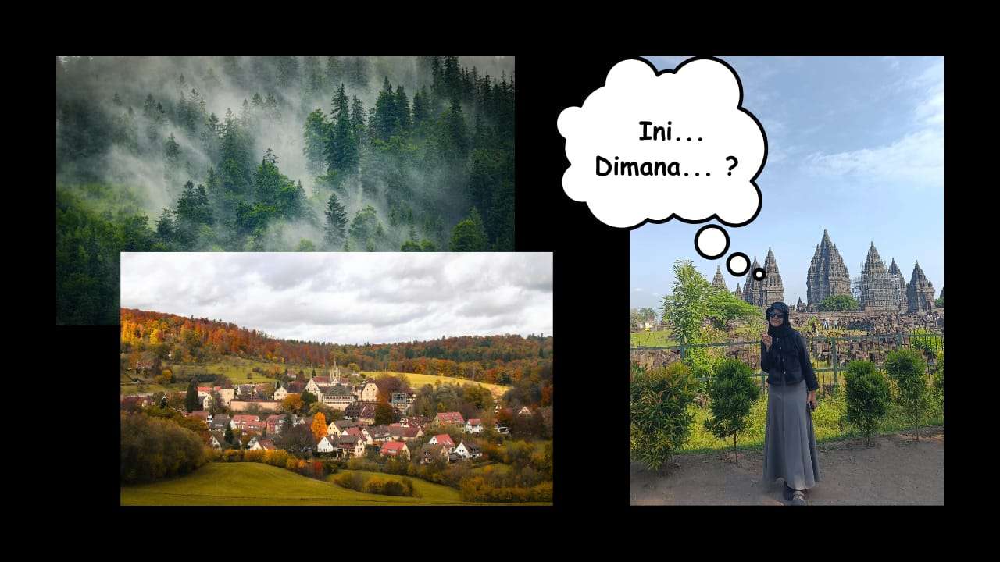
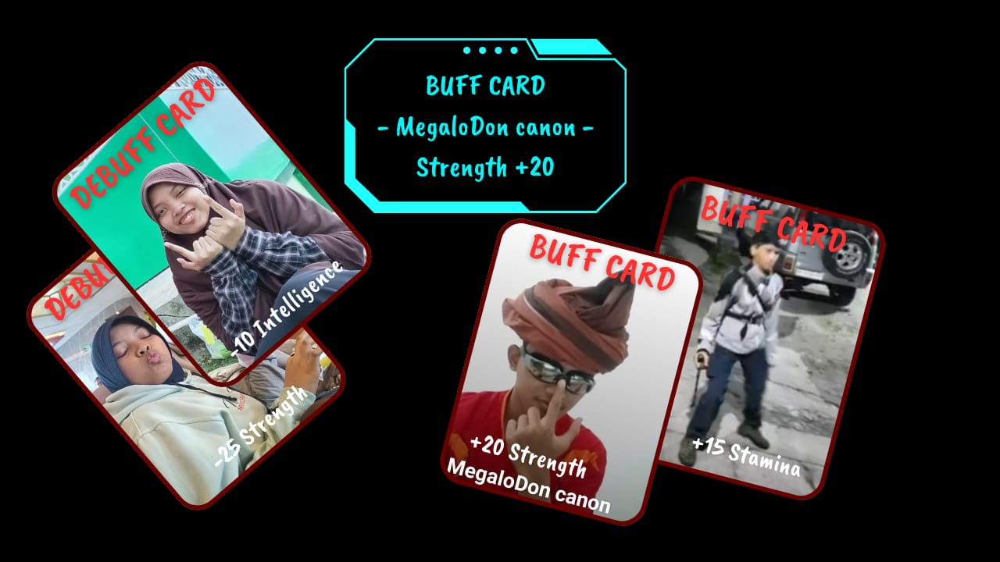
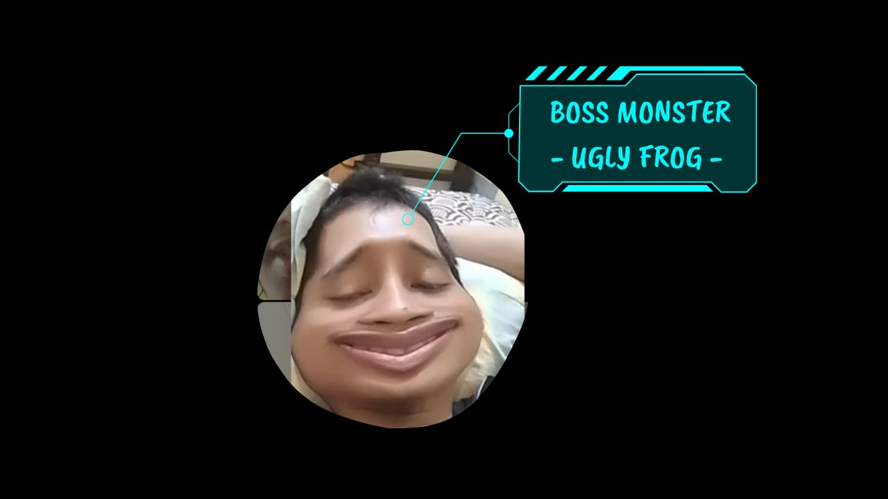
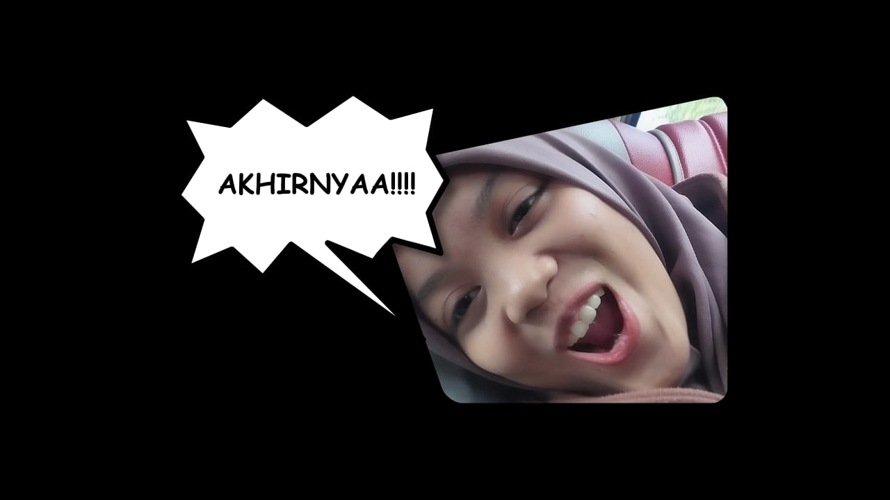
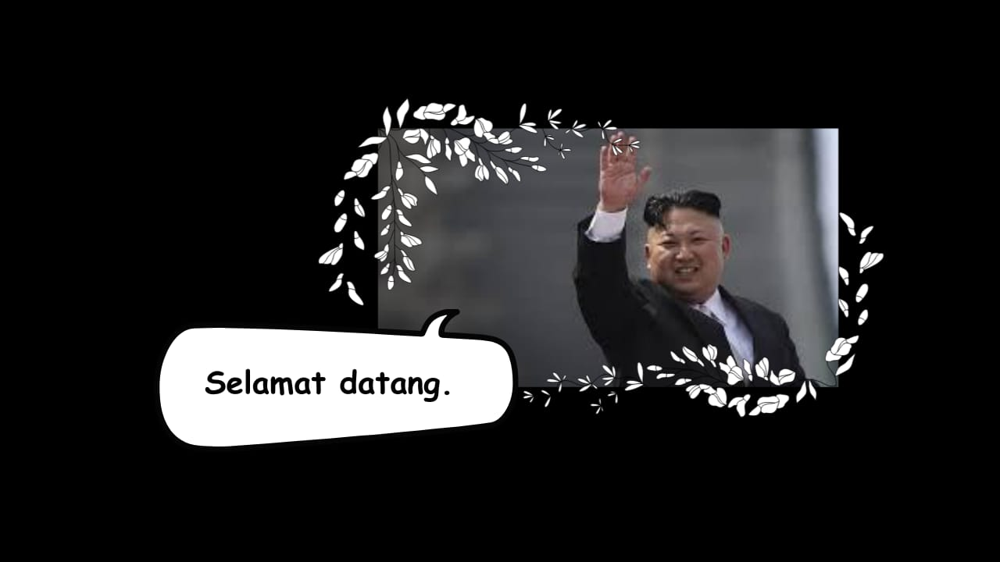
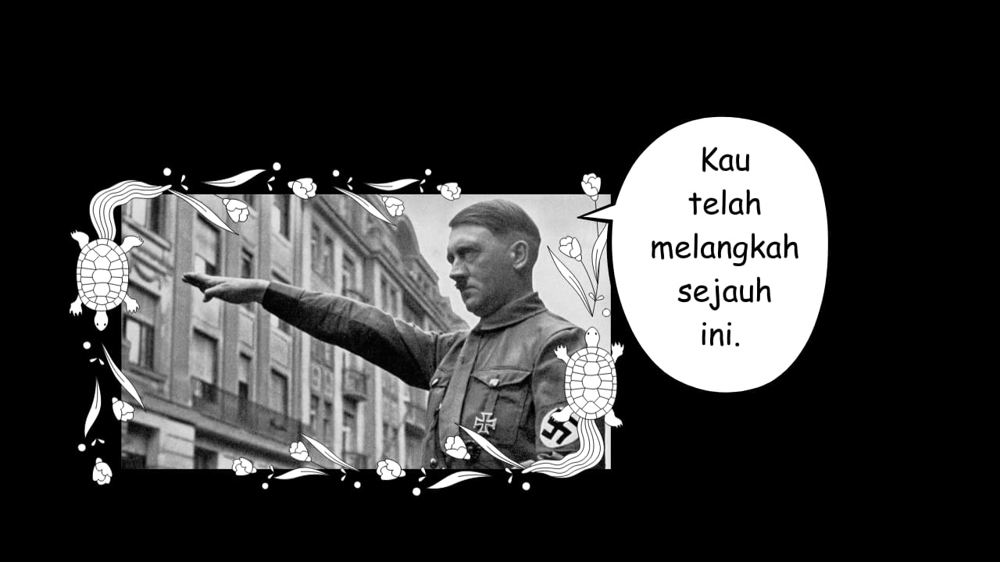
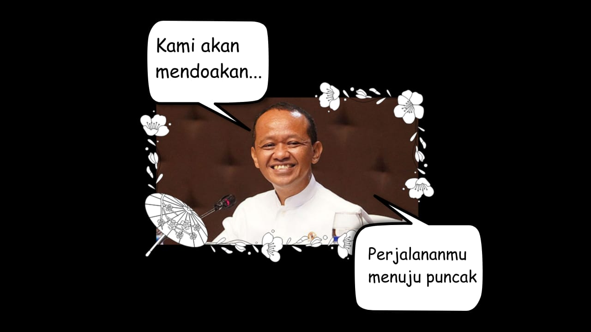
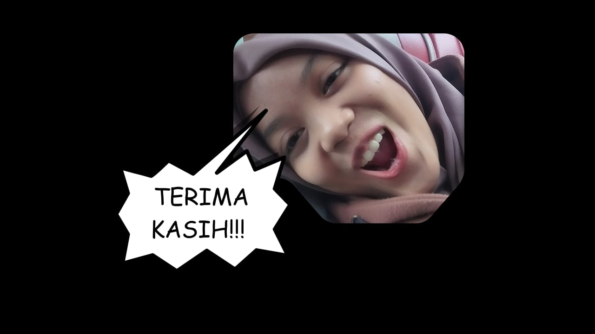

Seorang gadis biasa tiba-tiba terjebak dalam dunia misterius.
Untuk kembali ke dunia asalnya, ia harus menaklukkan menara.
Level demi level.
Lantai demi lantai.
Sampai suatu hari ia mencapai puncak… dan menemukan arti dari semua perjuangannya.
Namanya Niken Astuti. Saat ini ia berada di tempat yang sama sekali tidak dikenalnya.
Ingatan terakhir sebelum ia membuka mata di tempat asing ini adalah saat ia baru saja menyelesaikan laporan praktikum dengan deadline besok pagi.
Namun ketika ia terbangun… dunia sudah berbeda.

Udara terasa asing. Tidak ada kamar… tidak ada meja belajar… tidak ada laptop… Lalu tiba-tiba sebuah layar hologram muncul tepat di depan wajahnya.
Pengalaman membaca cerita fantasi dan bermain game membuatnya cepat memahami situasi.
Ia telah menjadi player.
Sebuah sistem.
Sebuah game… di dunia nyata.
[NEW MISSION]
[CLEAR THE DUNGEON]
Jika ingin kembali… ia harus menyelesaikan permainan ini.
CHAPTER 2 - PREPARATION
Setelah menerima misi, Niken segera mencari dungeon yang dimaksud. Kini ia berdiri di depan sebuah portal besar— gate menuju dungeon.
Waktu berlalu.
Niken semakin kuat.
Jeritan monster tidak lagi membuatnya gentar.
[FLOOR 10]
Enemy Defeated: 231/250
Well... Tidak sulit dikalahkan bukan berarti tidak melelahkan. Ia mengehela napas disela ayunan pedangnya menebas para musuh.
Enemy Defeated: 250/250
[CONGRATULATIONS – FLOOR 10 CLEAR]
Ia menjatuhkan tubuhnya ke lantai, bersandar pada tembok. Tiba-tiba sebuah kotak hadiah dari hologram muncul di wajahnya
[Claim Reward?]
[NO] [YES]
Setelah ia menekan 'YES' muncul beberapa kartu acak. Kartu itu berputar di udara hingga salah satu berhenti di depan wajahnya. Ada semacam visual effect confetti disekitar kartu tersebut.
[BUFF CARD – MegaloDon Canon]
Strength +20

Bertahun-tahun terasa… meski waktu sebenarnya tidak diketahui.
Perjalanannya masih panjang.
Dari kegelapan muncul satu makhluk raksasa.
Tubuhnya besar.
Kulitnya pucat.
Wajahnya… seperti katak.
Katak jelek...
[DEFEAT BOSS MONSTER]
[Enemy Defeated: 0/1]

Pertarungan dimulai.
30 menit.
1 jam.
2 jam.
Potion terus diminum.
HP turun. Pulih. Turun lagi.
Namun Niken tidak menyerah.
3 JAM PERTARUNGAN…

[CONGRATULATIONS – BOSS DEFEATED]
CHAPTER 6 - 21
Di tahun ke 21, dengan level ke 21, Niken menaiki tangga perlahan, memasuki lantai 21.
Lantai berikutnya… berbeda.
Tidak ada monster.
Tidak ada arena.
Di tengah ruangan berdiri sebuah altar batu kuno.
Terlihat cahaya dari bagian belakang.
Tiga sosok hero muncul.
Mereka menatap Niken dengan senyum bangga.



Dadanya terasa hangat.
Semua perjuangan… diakui.

Ia menggenggam pedangnya lebih erat.
Ia berjanji akan menyelesaikan menara ini. Sebelum kakinya melangkah jauh memasuki lantai 21, suara ketiga hero di depannya terdengar serentak dan lantang.
Top Comment
⭐⭐⭐⭐
Bahlil: Baca sambil nyawit awukawuk
⭐⭐⭐⭐⭐
MegaloDon canon: MC nya keceeee 😭🔥
⭐⭐⭐
TorukMakto: Kapan lawan tulkun nya?
⭐⭐⭐⭐⭐⭐⭐⭐⭐⭐
Hamoed Habibi: hamoedhabibihamoedhamoedhabibi
⭐⭐⭐
Om Hitler: HAIL HITLER!!
⭐⭐⭐⭐⭐
KimJongUn: MC nya mirip anak saya...